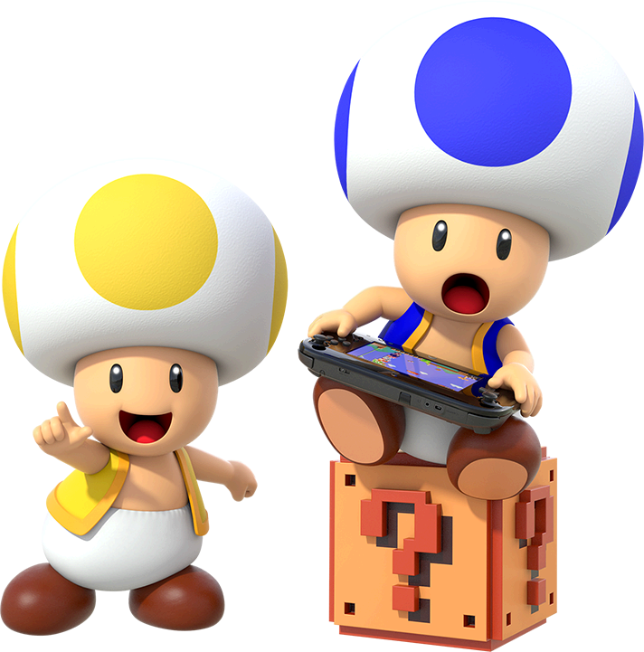

Note that this does not perfectly reflect the descriptions below, nor does it include every character discussed in this article.
This article will be about Mario characters and their popularity and 'ranking' from Nintendo's standpoint. We'll be primarily judging this by noting who appears in what games. Pay attention to the distinction between ‘main series and ‘spin-off’ games.
-Main series: Super Mario Bros 2D and 3D platforming games. This includes fusion 3D Land/World. This would even include, if antiquated, Super Mario Land.
-Spin-off games: Mario Kart, Mario Party, sports, RPGs, arcade, and puzzle games. Luigi’s Mansion. Mario + Rabbids. Sub-franchises belonging to Yoshi, Donkey Kong, and Wario are included here, at least pertaining to the main characters.
-And we won't count at all: Movies, comics, other outside media, though we might mention it
Visibility: Do you see this character? We will also dissect why or why not. Does the character have their own series? Were they created much earlier or later than others? Are they having a resurgence due to aligning with Nintendo’s current interests or philosophy? Do cameos count? Depends. Usually we are counting the character appearing in person, not as a small bonus sticker, skin, or trophy.
Playability: Can you play as them? This is where the main and spin-off series differ from the start, one not necessarily prioritizing a large roster compared to the other. Will they be merely aesthetic or have different stats? If someone is an enemy it will be rare to play as them in a main-series game, which hurts the scores of a few automatically. Spin-offs are far kinder however, even for ‘bad guys’!
Mario
Visibility: 5/5 (main and spinoffs)
Playable: 5/5
Mario is the guy that even non-gamers can pick out in a lineup easily, so it’s a great thing he’s such a law abiding citizen, even getting top billing on a few games where you spend a lot of time playing as other characters first (think the Mario Tennis/Golf Camelot titles). His characterization is typically on guard, nothing too extreme in main series games, though spin-offs can and will slip in some extra angles. He might be super competitive, goofy, a semi-unaware casanova, etc. Outside of his early girlfriend Pauline, the ‘romantic’ connections don’t go beyond a puppy love. Odyssey presenting him as overly romantic towards Peach is, besides fan-fic fuel, more of an anomaly. It’s possible to get in-game dialogue from beyond a ‘Ya-hoo!’, but you have to look close. Interestingly in some old manuals, like Super Mario World or Super Mario Land 2, Mario is a narrator talking to you. His social life involves everyone in the universe knowing who he is.
Well, that’s it for him but trust me, it gets more intriguing as we sort through the rest of his buddies.
Peach
 V: 5/5 (main and spin)
V: 5/5 (main and spin)
P: 1/5 or 2/5 main series, 5/5 spin-offs.
Princess of the Mushroom Kingdom, debuting in Super Mario Bros. 1. She is almost always the center of the conflict due to her less than stellar kingdom defense force. This created a situation where her visibility is as great as Mario’s, sometimes even getting some appearances that Luigi doesn’t get, yet you can’t play as her because she’s being held hostage! Her character is being revisioned in line with current day politics (not to open a can of worms, just commenting matter of factly here) to not be kidnapped so much and even be a playable character, but none of this is totally new. Super Princess Peach was a quirky but legit thing back in the day or WAY before then SMB2. Later, before Wonder really busted the roster open, we got her to show in 3D World, Super Mario Run and (via cheating in a way) Super Mario Bros U. Her characterization is, somewhat like Mario, closely monitored to be normalish, sometimes playful, and very concerned about those around her. RPGs offer her a little more action, perhaps allowing her to aid her own rescue by being sly and using social engineering. Romantically she is, unfortunately, quite a tease to Mario, but has a health social life otherwise. She knows other monarchs, has toads that lover her, a ‘grandpa’ that worries sick over her.. Not too different.
There weren’t a lot of NES sports games, but she (and Daisy in an early appearance) were in NES Open Tournament golf. Spin offs are super kind to her, often only female rep in SNES and N64 games. She’s playable in the Game and Watch Gallery series. She was in Smash bros from Melee onwards. Overall, it’s too early to totally revise her playable rating for main series games, but I’ll add an extra point to reflect what I believe to be her current trajectory.
Bowser
V: 5/5 (main and spin)
P: 1/5 main 4/5 spin
It’s freaking Bowser, the bad guy responsible for most conflicts. In fact in some of the few instances where he isn't, he manages to squeeze himself in anyway. Justifiably he's not often playable in main games. Characterization varies between cruel and mean, or comic reliefy and goofy. In spin off games except most of the Mario Parties he fares better but not as good as you might think. You can play him in all Mario Karts but not in most Mario Parties. The RPG’s are normally not playable for him unless it’s Super Mario RPG, Bowser’s Inside Story, and Super Paper Mario. Mario Tennis and Golf are normally good for him but not puzzle games. He is a Smash bros character as of Melee.
Kinda like Peach, there are often ‘plot’, yes, even for a Mario game, reasons behind what you can do with him. There was an interesting interview I read back in the day regarding SPM and how they had to think very carefully about if Bowser was to be a good guy going forward. Obviously not, but that does lampshade his frenemy angle, resulting in a recognized ‘Go-Karting with Bowser’ trope serves him well, as he fits in situations where other Mario antagonists that might technically have more going for them wouldn’t.
Luigi
 V: 4.5/5 (both)
V: 4.5/5 (both)
P: 4/5 main 5/5 spin
This younger leaner Mario brother is another star, at least in main series games. For spin-offs relating to sports and recreation he is also a guaranteed inclusion, yet for RPGs there’s a catch. He will always show up somewhere, but if it’s not a Mario and Luigi game you might not be able to control him. Sometimes there’s some plot justification. For Paper Mario the emphasis is placed on the various partners of Mario, meanwhile Luigi is free to do his own thing or have his own adventures or whatever.
In other places the excuse is hard to find however. In some modern games he can be restricted as a player two option (NSMB) or an end of game completion trophy, like the first Mario Galaxy. Super Mario 64 or Sunshine famously omit him completely and in Odyssey he merely cameos! He famously had to rescue Mario in an education game where Mario went missing. (Guess the title) He later got his own franchise of the Luigi’s Mansion games (even if it took a while to get some sequels), where YOU (again) do the rescuing of Mario and whoever else. He got into the first Smash Bros, where the slots were pretty tight, so give him credit there. Yes, also his Year of Luigi did work in his favor, giving him more appearances.
His characterization is allowed to be a bit looser than Mario depending on game, with the Paper Mario titles simply having him talk and tell exaggerated stories to you like a normal person. His relationship with Daisy is more of a tease deal than anything official, but it ain’t a bad ship, we’ll give you that. He has to often prove himself, and fight his own fears, but Peach does respect him and most of the good guys, except a few jerkish toads.
Overall he’s a very common occurrence to see and play as, even if you must plug in a second controller. As much painful as it is to see his spin off score higher than his main, not or barely appearing in some very major 3D Mario games hurts.
Yoshi
 V: 4/5
V: 4/5
P: 3/5 main 4.5/5 spin.
Yoshi is more frequent than one might think as a regular and supporting character. Sometimes he can speak English, other times not, but he’s always cheerful and loyal. His abilities are distinct and his games have a specific style of play. Because some games present multiple ‘yoshies’ he does have a tiny bit of the ‘composite vs specific’ character conundrum, ala Lakitu, Koopa, Toad, Shy Guy, Birdo, etc, but of this dubious bunch, Yoshi is undoubtedly the biggest name.
Both 3D and 2D main series games flip flop on if he’ll appear and be playable (ridable). He does have his own franchise however, and appears in puzzle games like Yoshi, Yoshi’s Cookie, and Tetris Attack. He has from the start almost shown up a lot in the Mario Karts, Parties, sports etc. This gives him a respectable visibility score and it’s his playability that vacillates, slapping restrictions on you and making him akin to a power up rather than a character. RPGs are okay for him cameo-wise only, and Paper Mario straight up gives him no direct appearance. (There ARE yoshis in Paper Mario titles but not our T. Yoshisaur..) Oddly, he showed in Super Mario 64 and Sunshine when Luigi didn’t. Some modern games feature Yoshi as a ‘easy mode’ option, interestingly the only time when the actual yoshi is playable as opposed to another character riding them. This association with Yoshi and more infantile matters can be a little annoying, as while the Yoshi series did take this angle early on, those games meant business beyond their colorful kiddie aesthetics.
Overall, he’s a very recognizable character, as reflected in his visibility score. His uniqueness is unfortunately why he can’t fit in every type of game, thus the varying playability.
Toad
V: 5/5
P: 1.5/5 main, 3/5 spin
Toad? Which Toad?
-The one with the red spots and indigo vest! Yes.
-Actually there’s more than one of those too.. Toads are ubiquitous in games starting in SMB1, normally docile but cowardly which, why Bucken-Berry and Ala-Gold (Blue and yellow toad from NSMB games) were created. Captain Toad is also an exception, debuting with his brigade in Galaxy and other 3D games and later getting a spin off puzzle game. The canonical Toad IS supposedly in Super Mario 3D World, appearing blue as nod to SMB2. (Citation: Mario Wiki: Blue Toad) Spin-off wise Wario’s Wood’s is a notable early role one might not expect, and he’s always been in Mario Karts. Aside from being an early host of Mario Parties, his sports game appearances are healthy as well. RPGs will heavily feature unplayable toads, and never present a so-called canonical Toad either. He’s not a Smash brother, but has since Melee always appeared in the game either way. Appearing in other characters’ spin off series is practically non-existent outside of Luigi Mansion roles, though this might fall under plot reasons. If it’s not a Paper Mario or otherwise RPG game where the Toads encountered have their own agency, any Toads seen otherwise usually have a direct connection to Peach.
The massive visibility is what carries him or them or whatever into the first tier. With their connection to Peach, they will show when she shows. Nintendo recognizes that is indeed a desire to play as (a) Toad, as the so-called canonical one appears in later Mario Parties with alternative hosts taking his role, and some of the main series games give us the Blue and Yellow ones.
Bowser Junior
 V: 4/5
V: 4/5
P: 1/5 main 3.5/5 spin
Mainstay despite being a relatively new addition compared to others, well, if 2002 is new. (It isn't. I know I'm old.) As a pretty major character, he replaced the Koopalings completely for a while but now exists alongside them as a superior. He’s very likely to show up in main series games 2D or 3D which is unique. He is usually found being an easy miniboss in games. His spin off count is respectable, but not perfect. He’s often in sports games, and some Mario Karts, also later Mario Parties as a replacement for the depreciated Koopa Kids. Paper Mario brought him on as a main villain from Sticker Star onward, same for later Mario & Luigi games. Smash Bros brought him on since 4, sharting a slot with Koopalings. His personality is what would be expected of a koopa brat but he can be entertaining along with his dangerous plumber-killing toys, like the Koopa Clown Cars and etc. Not a ton of depth here, but since he and Koopalings can co-exist there’s little reason to hate him either.
He’s considered, at least by Nintendo to be a prominent character, judging by his very strong main series visibility score. For the same reasons as Bowser, he’s not always playable, though later spinoffs try to slip him in more if one is a fan.
Rosalina
 V: 2/5
V: 2/5
P: 1/5 main, 2/5 spin.
This unique goddess appeared in Mario Galaxy, and with a backstory! And a deranged fanbase too, (just look at her trauma). And we promptly forgot that backstory when we decided we needed a baby version of her!... She does have respectable appearances in modern day spin offs and is playable in 3D World. She’s been in Mario Kart since Wii and gave Smash Bros yet another Mario rep since 4. Later sports titles will let us play as her graceful self. Still, it’s early to weigh her against some of the heavyweights of the first tier, and she is mostly in side games overall outside of cameos.
Characterization-wise, there is much there. She has a unique environment, role, and debut. Her trajectory was aiming high, or I thought it was. Not making the cut in Super Mario Wonder was my cue to bump her down a tier. There might have been plot reasons, and I’d hate to penalize a Mario character for having lore that matters, but if other characters could be included for literally no reason she could have at least cameoed.
Daisy
V: 1.5/5 main 4/5 spin
P: 1/5 main, 3/5 spin
Princess of Sarasaland, famous for also being a queen. -Of spin-offs! It is true unfortunately for her, that she was missing without a trace in most main-series games short of the recent Wonder. Spin-offs were and still is her domain for the most part, starting very early with an appearance in NES Open Tournament Golf. She's been 'tough' since Mario Party 3 where she smacks the snot out of Bowser and also made it in N64 Mario Tennis onward. She’s found in later Mario Karts since Double Dash!! And other side games here and there. She’s oft inclined to cameo in some games, but not be of the main cast, like in Smash Bros for instance. Since that NES golf game, she was an ostensible love interest for Luigi, but they’ve not been official. Let’s give her credit for not actually dragging him along either. There’s no life and death rescuing baggage between them, which is refreshing in a way. No, she is not Peach's cousin despite what Prima guides will imply. Her personality is being tomboyish and actiony, more rough on the edges, a foil to Peach. She has good relationships with most and dislikes Waluigi, for good reason.
Rounding up her strong presence in the spin-off games and throwing an extra bone because she made the cut in Wonder, middle of the road is appropriate for now playability wise. Appearance wise she’s of course very popular, even if some of her infamy isn’t her fault.
Wario
 V: 1/5 main, 3 to 4/5 spin
V: 1/5 main, 3 to 4/5 spin
P: 1/5 main, 4/5 spin
This guy started out in a Super Mario Land game then very quickly got a platforming and later micro-game compilation franchise. Mario main-series wise, we’re about as dry as the desert, outside of his first game. Short of Super Mario 64 DS, games where one might think he could be included simply skip over him, the NSMB games, the 3D ones (besides what we just mentioned), everything.
Spin-off wise, we do pretty well from N64 era onward and even before then with him being in puzzle games on the NES and SNES. We should note that he was somewhat of a token ‘bad guy’ you could play as when Bowser wasn’t available, or at times alongside him as another heavy character. As popular as his Wario Land and Wario Ware games are among players, from Nintendo’s standpoint, it’s not necessarily as health. In recent years the games we get with Wario’s badge on them grow thinner unfortunately. Wario Land is to the dismay of many a fossilized franchise since the Wii era, references to such even removed from Wario’s moveset in Smash Bros. Wario Ware continues to be more relevant with proper releases, a ymmv thing. He is totally absent in RPGs, outside of Mario having his suit via a badge in The Thousand Year Door.
Characterization is very consistent once we get past his first outing, obsessed with money, willing to go far for it, and full of questionable schemes, often with a partner like Waluigi, or stringing along ‘employees’. His rates overall reflect how he’s a game of extremes, not unlike Daisy, except he has his own franchises for extra points in the spin-off categories.
Donkey Kong
V: 1/5 main. 3 to 4/5 spin
P: 0/5 main, 3/5 spin
Donkey Kong is a crossover character with his own franchise, more distinct than the others even. Since we’re not dissecting Donkey Kong games, this section won’tlong. He doesn’t appear a lot in main-series games, but is frequently in spin-off and spin-off adjacent games, like Donkey Kong (arcade) and Mario vs Donkey Kong. He’s a frequent in sports and recreation, often offering the player a heavy type character without being a bad guy. He thought he could take on Bowser in some Mario Parties, which was unique, except that later he stopped being playable for a while to be a mere ally, an ‘Anti-Bowser’. Thankfully that’s reverted later.
Characterization is being helpful, brawny, and obsessed with bananas. He made it in Smash Bros from the start, but is nowhere to be found in RPGs. Awkwardly being removed as a playable character during a span of Mario Parties and the fact that he didn’t really get some momentum going until N64 era hurt his score.
Koopalings
 V: 3.5/5 main, 3/5 spin
V: 3.5/5 main, 3/5 spin
P: 0/5 main, 3/5 spin
Yes, we’re evaluating them collectively because that’s how Nintendo treats them, a blessing and curse as we’ll see. (See: article) In early Mario times they were major villains for main series games, Super Mario Bros 3, Super Mario World, some spin-offs, plus all of the extended Mario media. Something odd happened later, however. For a personal antidote, I got into Mario in the early to mid-2000s. I learned of the Koopalings from the Gameboy remakes of some classic platformers and noticed that they weren’t really in any contemporary games, obscureish characters (outside of Superstar Saga), replaced at that time by Bowser Junior already. It would take NSMB Wii to give them all redesigns and mark their official ‘comeback’. Suddenly their inclusion in some spin-offs came off as excessive to ‘haters’ coming out of the woodwork. They can’t win!
Anyway, they are frequent in the later NSMB titles, and even later RPGs, but not the 3D main-series games. Mario Kart 8 makes them playable so they fill the roster, not unlike how the babies do. (And we WILL cover some babies later) They don’t show up in Mario Parties or most sport games. Due to being, erm palette swaps with Bowser Jr, they get to show up there starting in 4. They are cool, distinct characters with a rich history, simply a victim of Nintendo’s evolving goals. In their favor, being historically main-series characters meant that games with enforced stringent casting, such as modern Paper Mario, could use them without delving into OCs.
Their strength are that they have the numbers to occupy the position of world bosses, they are tied to diverse themes, are visually interesting, and you’re bound to have a favorite. Their weakness is that you can’t separate them, so often a single character like Bowser Junior is better logistically. Since it must be said, yes they were Bowser’s kids for at one point (Again see that Mario Oddity article), but somehow he got out of child support later. Well, he is a villain.
Waluigi
V: 0/5 main 4/5 spin
P: 0/5 main, 4/5 spin
The 'Spin-off King'. Perhaps that’s disparaging to fans, but when we look at the track record he dominates in Mario sports games unambiguously.
He started in Mario Tennis 64 and he's been in Mario Party since three, maybe a little earlier than one might think. Mario Karts, why suddenly vanishing from MK7 was such a big deal, and can show up in spin-offs one wouldn’t expect, like Game and Watch Gallery 4. He has cameos in Smash Brothers since Brawl. His personality is being ill-tempered, competitive (in sports), comical, and memerific apparently to his fans. He’s partnered with Wario, but Nintendo does not want him to be seen as his brother or anything.The fact that Nintendo keeps him away from Wario games is somewhat telling that the relationship is artificially crafted for sports games, and that's a missed opportunity.
Toadette
 V: 4/5 main, 4/5 spin
V: 4/5 main, 4/5 spin
P: 2/5 main, 3/5/spin
A female or ostensibly so toad and mainish side character on the up-and-up in recent years. Her debut is in the 21st century unlike some others, MK:DD (2003), shortly appearing in Paper Mario, Mario Baseball, Mario Party Advance, etc. Was she a future spin-off queen? Possibly until Nintendo started to clamp on side characters more, and Toadette became an acceptable choice for main-series titles without being considered an OC. Cue her showing up in a number of the platformers, 2D and 3D.
She can also appear in other RPG games, sports titles, puzzle games with Captain Toad, and Dance Dance Revolution? Her prospects seem healthy, and Super Mario Wonder helped, she’s just not always playable, even in spin-offs. Like with Donkey Kong, she’s been at times taken out of a playable spot in Mario Party to be a host instead. Due to her Super Crown usage in New Super Mario Bros. U Deluxe, she spawned a whole lotta new head cannons for the Mario fandom, so let’s give her that. Her ratings are all over the place, taking into account the age of the character and reflecting her current trajectory.
Toadsworth
V: 1/5 main, 2/5 spin
P: 0/5 main, 1/5 spin
Another 21th century debut, first appearing in Super Mario Sunshine. Once a frequent in RPGs, his roles were always minor in the grand scheme of things, mostly around to worry about Peach’s well-being. In other spin-off games he might appear but not be playable outside of the baseball games. In the original NSMB he personally ran the toad houses and his cane could act as a wand. Some fans in the early 20s suddenly wondered where he went, but his decline started in the 10s if we analyze it more. Gamecube era was both his debut and strongest stand. He’s in a few tennis games, but none of the Mario Karts outside of a cameo, and hosted one Mario Party. Is this a tragedy? Somewhat, but Toadette and the Yellow and Blue Toads are often the better choice since you might get a chance to play as them. Toadsworth’s ONLY playable roles are the two baseball titles and Yakuman DS. I feel that it’s less of a matter of ideas being left on the table and more of the character running its course. Or maybe they hate old people.
Baby Mario
 V: 1/5 main. 3/5 spin
V: 1/5 main. 3/5 spin
P: 0/5 main, 3/5 spin
Thought we were done talking about Mario? Nope! He started in Yoshi's Island, usually the focus of those games but strangely became a spin-off roster filler starting in N64 sports games and later in Double Dash. He's here and there from that point on. Since he's not just a generic character to be thrown anywhere like some we’ll cover later, he doesn't have as many roles outside of Yoshi games as one might think and has dropped off in later years like Toadsworth. Still, because he's so integral to Yoshi games he barely makes the second level cut.
Kamek
 V: 2/5 main. 3/5 spin
V: 2/5 main. 3/5 spin
P: 0/5 main, 1/5 spin
He's on the up-and-up, sneakily so to be honest. He started strong with his Yoshi's Island association, and has since showed up often in main and spin-offs as a high ranking mook of Bowser. For the 2D games he's a menace, making other bosses harder to fight- at least in theory. 3D games not so much. He can appear in Mario Parties as early as 2 and RPGs, including the Paper Mario games, if replacing poor old Kammy. He used an inverted clause compared to the Koopalings. Where they were dug up from the grave because they were main-series characters, Kamek came from a spin-off series, but was so major there Nintendo could start to use him in main-series stuff. He doesn't really do well in sports games or the Mario Karts aside from beta content, and you hardly ever play as him, Tetris Attack, Mario Party 9, and a brief moment of Paper Mario: Origami King being out odd ones out (or in if you're a fan).. While we don't count movies here, he did appear in the modern day movie, so that further reinforces his throne as top baddie. (That isn't Bowser Junior)
Birdo: Has an early main role in SMB2, mostly a spin-off mainstay since. Wario's Woods was her weird puzzle phase and she's in Super Mario RPG. Sometimes included to give Yoshi a partner in sports like tennis or golf or Mario Kart. She's in some later Mario Parties like 7 as an unlockable and randomly in one Paper Mario as a cameo. Overall a side character with some rich history, kind of hard to rate but there aren't a lot of 'important' roles here. The 'are they are unique character or not' syndrome hurts the case as well.
Blue and Yellow Toad: Notable for having a decently strong if relatively recent presence in some main-series games, albeit perhaps if you have multiple controllers.
Diddy Kong: A tier one from DK’s perspective, but not Mario. I didn't really realize his lack of appearances in Mario games until writing article. He didn't start appearing in Mario games until MK: Double Dash so that puts him past the 2000 mark. Then and after that just some sports games and spin offs in modern times. He was missing from Mario Party until the ninth. He has been in Smash Bros since Brawl, but we're not really counting that here.
Baddies: Lakitus, Goomba, Shy Guy, Hammer Bro, Koopa, Dry Bone, Boo: Frequent generic enemies sometimes put in games as playable extras or at the least cameos. Koopa and Dry Bones get elevated because they are more likely to show in Mario Kart, Koopa even being and original racer. Dry Bones is more spotty but still common enough. Lakitu is always around just rarely playable, same for hammer bro. Shy Guy is often around but his ability to be played as is sometimes weirdly restricted like in Mario Kart DS where he's only for verses play.
King Boo: Luigi's personal villain coming from Luigi's Mansion. Generally he's restricted there but can show up when you least think even in main series like Sunshine or SM64 DS. He's in Mario Kart since Double Dash but not always as playable. He can show up in Mario Parties, not playable though. Overall he's somewhat frequent as a boss in modern Mario games. I would like if he was more than depicted as a large boo in a crown, he's still cool regardless.

Baby Luigi: Think Baby Mario but in distress. While he's not in the N64 games everywhere else he's where ever his brother is. Because of you not playing as him much this makes him more minor (or more infant, get it?)
Petey Piranha: A strange addition so let's talk about him! Debuted Gamecube era in Sunshine and for a while he was a semi-frequent spin off addition. He can or could rather appear in just about anything from RPGs to sports or spin-offs like Super Princess Peach or even Smash Bros. This unpredictability makes it seem like he marches to his own beat and I kind of like that.
Nabbit: Yes, per Super Mario Bros. Wonder, this neither ally nor enemy made the cut. He started out as a mysterious Bowser Junior mask wearing guy in SMB:WiiU, and now in the year of our Lord 2024.. He still is, except playable in Main series stuff and even spin-offs, if as a 'easier' option to play as.
RPG characters and bosses: Fawful, and others.
Professor E. Gadd : Mostly relating to Luigi’s mansion but has a few odd appearances elsewhere as a professor like some RPGs and Mario Party 6. This is not counting the references to his inventions in many more games, like confusingly (at least I always felt) Super Mario Sunshine. I will say that from an American standpoint his roles did have a pretty big gap from Partners in Time in 2005 to Luigi's Mansion Dark Moon in 2014, but he's recovered some since.
Pauline: Mario's original girlfriend before the whole Mushroom Kingdom thing. That has to be awkward. She's in Donkey Kong and logically the Gameboy remake but then made a jump after a few years in the Mario vs Donkey Kong. That's not that strange given the theme of those games, what was unexpected was Super Mario Odyssey as the mayor. Wasn't she strictly from the normal world? Oh well. Since she's playable in Mario Tennis Aces and a few others but as a rule she's usually a cameo and not a character to play.
Metal Mario: Why are we reviewing a power up? Silly you, this is a completely original character according to Nintendo. Smash Bros first made him be a mini boss and games like Mario Golf has him unlockable along with some other sports titles. He's a boss in Dr. Mario 64 and a clone option in later Mario Karts starting with 7. Not much more to say aside from the fact that he can't say 'mama mia' correctly and he's constantly underwater by the sounds of it. Overall he's a strict utility character, as in you get to use a power character with the frame of a normal one. That's great and all, but did it have to be a copy of our Mario to do that? Be aware that that's not why he's ranked so low, this isn't about my opinions after all, he just has a game track record you can count on your fingers.